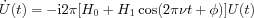

Compute pulse propagators.
U = propint(H0,H1,tp,freq) U = propint(H0,H1,tp,freq,phase) U = propint(H0,H1,tp,freq,phase,n) [U,SaveU] = propint(...) U = propint(SaveU,tp,freq) U = propint(SaveU,tp,freq,phase)
propint computes a pulse propagator by numerically integrating
over the interval
t=tp(1) to t=tp(2)
using steps of dt = 1/freq/n.
H0 is the static Hamiltonian, H1 the time-dependent one.
They should both be in units of MHz.
tp is a 2-element vector with the start and end time of the pulse in μs, freq is the irradiation frequency ν in MHz.
phase gives the initial phase φ in radians (default is 0).
n gives the number of intervals in which one period of the propagation is
divided, its default is 256.
The resulting propagator is returned in U. If propagators of more than one pulse,
but the same H0 and H1
are wanted, then one should retrieve SaveU from the first call to propint.
[Ua,SaveU] = propint(myH0,myH1,tpa,freq);
It contains intermediate integration results which can be reused in the next call.
In that case use the calling form where SaveU is passed as argument instead
of H0 and H1.
Ub = propint(SaveU,tpb,freq);
The savings in computation time are enormous. While the first call might take some time, the second call finishes in an instant.
A resonant π/2 pulse for a spin-1 would be represented by the propagator
Sz = sop(1,'z'); Sy = sop(1,'y'); % S=1 system mwFreq = 10e3; tp = 0.010; % 10 GHz, 10 ns U = propint(mwFreq*Sz,1/2/tp*Sy,tp,mwFreq)
U = 0.5000 + 0.0006i -0.7071 - 0.0004i 0.5000 + 0.0000i 0.7071 + 0.0004i 0.0000 - 0.0000i -0.7071 + 0.0004i 0.5000 + 0.0000i 0.7071 - 0.0004i 0.5000 - 0.0006i
A resonant π pulse on an two-spin system gives a propagator
spins = [1/2 1/2]; Sz = sop(spins,'ze'); Sy = sop(spins,'ye'); mwFreq = 10e3; tp = 0.010; % 10 GHz, 10 ns U = propint(mwFreq*Sz,1/tp*Sy,tp,mwFreq)
U =
0.0000 + 0.0012i 0 -1.0000 + 0.0000i 0
0 0.0000 + 0.0012i 0 -1.0000 + 0.0000i
1.0000 - 0.0000i 0 0.0000 - 0.0012i 0
0 1.0000 - 0.0000i 0 0.0000 - 0.0012i
This propagator inverts populations in the density matrix.
Density0 = -Sz; NewDensity = U*Density0*U'
NewDensity =
0.5000 + 0.0000i 0 -0.0000 - 0.0012i 0
0 0.5000 + 0.0000i 0 -0.0000 - 0.0012i
-0.0000 + 0.0012i 0 -0.5000 0
0 -0.0000 + 0.0012i 0 -0.5000